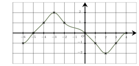
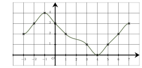

Conversions, variations et fonctions
QCM à réponse unique — choisis une proposition pour révéler la correction immédiatement.
Même QCM, sans correction — ton score apparaît une fois toutes les questions complétées.
$2{,}4\text{ h} =2 \text{ h} + 0{,}4 \text{ h}$, soit $2\text{ h} + \dfrac{2}{5} \text{ h} = 120 \text{ min} + 24\text{ min} = 144 \text{ min}$.
Ainsi, $2{,}4$ heures correspond à $144$ minutes.
La bonne réponse est la réponse D.

Une seule affirmation est correcte :$\bullet$ Soit $k\in[-1\ ;\ 0]$.
L’équation $f(x)=k$ admet exactement trois solutions.
Cette affirmation est correcte :
Si $k\in[-1\ ;\ 0]$ la droite d’équation $y=k$ coupe bien trois fois la courbe.
$\bullet$ La somme des solutions de l’équation $f(x)=0$ est égal à $-20$.
Cette affirmation est fausse :
L’équation $f(x)=0$ a deux solutions : $-5$ et $4$.
La somme de ces solutions est $-5+ 4= -1$.
$\bullet$ Soit $k\in\mathbb{R}$.
Il n’existe que deux valeurs de $k$ pour lesquelles l’équation $f(x)=k$ ait exactement trois solutions.
Cette affirmation est fausse :
Pour toutes les valeurs de $k$ comprises entre $-1$ et $0$, l’équation $f(x)=k$ admet exactement trois solutions.
$\bullet$ Soit $k\in]1\ ;\ 2[$.
L’équation $f(x)=k$ admet exactement trois solutions.
Cette affirmation est fausse :
Si $k\in]1\ ;\ 2[$, la droite d’équation $y=k$ coupe bien deux fois la courbe.
La bonne réponse est la réponse B.
Voici quatre planètes et leur masse :
| Planètes | Masses |
|---|---|
| Planète 1 | 36,19 × 1022 kg |
| Planète 2 | 51,59 × 1020 kg |
| Planète 3 | 655,46 × 1024 kg |
| Planète 4 | 18,98 × 1025 kg |
On écrit les masses en écriture scientifique pour les comparer :
• Planète 1 : $36{,}19\times 10^{22} = 3{,}619\times 10^{1}\times 10^{22} = 3{,}619\times 10^{23}$ kg
• Planète 2 : $51{,}59\times 10^{20} = 5{,}159\times 10^{1}\times 10^{20} = 5{,}159\times 10^{21}$ kg
• Planète 3 : $655{,}46\times 10^{24} = 6{,}554\ 6\times 10^{2}\times 10^{24} = 6{,}554\ 6\times 10^{26}$ kg
• Planète 4 : $18{,}98\times 10^{25} = 1{,}898\times 10^{1}\times 10^{25} = 1{,}898\times 10^{26}$ kg
On a donc : $6{,}554\ 6\times 10^{26}$ $>$ $1{,}898\times 10^{26}$ $>$ $3{,}619\times 10^{23}$ $>$ $5{,}159\times 10^{21}$
Donc il s’agit de la Planète 3 qui a la masse la plus importante.
La bonne réponse est la réponse D.
$10^{-22}$ est très petit devant $15$.
En effet, $10^{-22}=\dfrac{1}{10^{22}}=\underbrace{0,0\ldots 0}_{22 \text{ zéros}}1$.
On en déduit que $15+10^{-22}$ est environ égal à $15$.
La bonne réponse est la réponse A.
Le coefficient multiplicateur associé à une augmentation de $300\ $% est $1+3=4$.
Comme $4\times 0{,}25=1$, il faut donc multiplier par $0{,}25$ (coefficient multiplicateur réciproque) pour revenir au prix initial.
Un coefficient multiplicateur de $0{,}25$ correspond à un taux d’évolution de $-75\ $%.
On en déduit qu’il faut une baisse de $75\ $%.
La bonne réponse est la réponse D.
Si un prix a doublé, cela signifie que le coefficient multiplicateur est $CM = 2$.
Le taux d’évolution $T$ vérifie : $T = CM - 1 = 2 - 1 = 1 = 100\ $%.
Le prix a donc augmenté de $100\ $%.
La bonne réponse est la réponse A.

Une seule affirmation est correcte :Voici quatre cellules et leur taille :
| Cellules | Tailles |
|---|---|
| Cellule 1 | 31,96 × 10-6 mm |
| Cellule 2 | 367 540 × 10-10 mm |
| Cellule 3 | 3,17 × 10-6 mm |
| Cellule 4 | 44,63 × 10-10 mm |